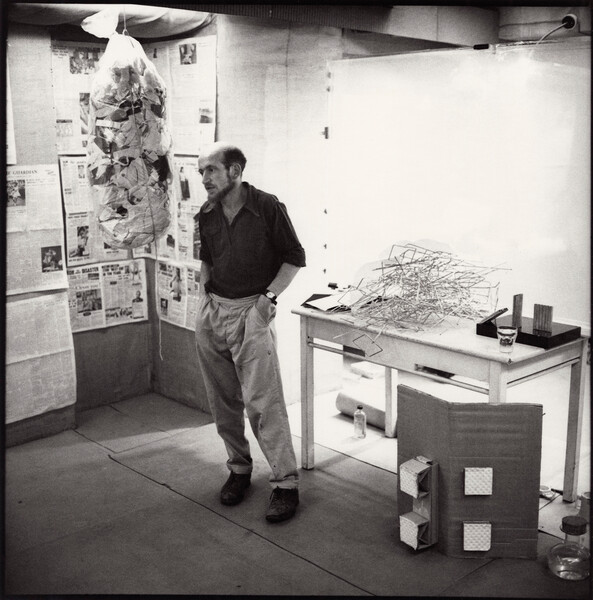

Gustav Metzger (1926–2017) was an artist, theorist and activist whose life and work was driven by a profound sense of ethical responsibility. Shaped by experiences of displacement, political violence and loss, he believed that art must respond directly to the conditions of its time rather than exist as a purely aesthetic pursuit.
From the late 1950s onwards, Metzger's practice was closely linked to political action, particularly anti-capitalist, anti-nuclear and environmental movements. These concerns found their clearest artistic expression in Auto-Destructive Art, first articulated in 1959. Conceived as a public and time-based practice, auto-destructive works were designed to change, decay or destroy themselves, reflecting Metzger's belief that modern society was moving towards self-inflicted catastrophe. For him, destruction was not an end in itself, but a means of exposing the violence embedded within systems of power, technology and mass consumption.
Across the following decades, Metzger expanded his work through manifestos, lectures, exhibitions and collaborations that brought together art, science and political debate. He played a central role in organising the Destruction in Art Symposium and later developed immersive environments and light projections using new materials and emerging technologies. In his later work, Metzger focused increasingly on ecological crisis, extinction and historical memory, themes that remain urgently relevant today. Today, Metzger is recognised as one of the most significant and urgent artistic voices of the twentieth and early twenty-first centuries.